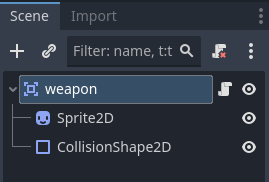

⚔️ Lliçó 7: L'Art del Combat – Sincronització, Animació i Detecció
En aquesta lliçó transformarem l'Aina d'una exploradora a una guerrera. No es tracta només de prémer una tecla, sinó d'entendre com el motor coordina la imatge de l'arma, la seua zona de perill i la lògica del monstre.
1. L'Anatomia de l'Arma: Més que una imatge
Una espasa en un videojoc no és només un dibuix que es mou. És la combinació de dos elements vitals:
- Visual (Sprite2D): El que el jugador veu.
- Física (Area2D + CollisionShape2D): El que el joc entén com a "zona de perill" o Hitbox.
En Godot, el més eficient és crear una escena separada anomenada Weapon.tscn. Així, podríem
canviar d'espasa o fins i tot donar-li armes als enemics reutilitzant la mateixa lògica.
Estructura del Node Weapon:
- Node2D (Arrel de l'escena).
- Sprite2D (La imatge de l'espasa).
- Area2D (Anomenada
Hitbox).- CollisionShape2D: La zona exacta on l'espasa fa mal.

2. Sincronització: El truc de la línia de temps
Aquí és on ocorre la màgia. Si deixem la col·lisió de l'espasa activada sempre, els enemics moririen només amb tocar-nos mentre caminem. L'arma només ha de ser perillosa quan estem atacant.
Usarem l'AnimationPlayer de l'Aina per a controlar no només el moviment, sinó també l'activació física de l'arma:
Com sincronitzar el colp:
- Dins de l'animació d'atac (ex:
attack_down), afegeix una Property Track. - Selecciona el node
CollisionShape2Dde l'arma. - Tria la propietat
disabled. - A l'inici de l'animació, posa un keyframe amb
disabled = true. - En el moment exacte del "swing" (quan l'espasa brilla o es mou ràpid), posa un keyframe amb
disabled = false. - Al final del moviment, torna a posar
disabled = true.
D'aquesta manera, l'espasa només "existeix" físicament durant uns pocs mil·lisegons, de forma perfectament sincronitzada amb el que veu l'usuari.
3. Capes de Combat: Qui rep el colp?
Recordeu la Lliçó 5? Perquè el combat funcione, hem de configurar correctament les capes (Layers) i màscares (Masks) de la nostra Hitbox (l'arma):
- Layer: Capa 4 (Dany del Jugador).
- Mask: Capa 3 (On viuen els Enemics).
Així, l'espasa "només té ulls" per als enemics i ignorarà completament les parets o la pròpia Aina.
4. Codi de Combat: Disparant l'animació
En el nostre script de l'Aina, hem de detectar quan el jugador vol atacar. Com que estem usant un AnimationTree, no cridarem l'animació directament, sinó que canviarem un paràmetre.
# Dins de _process o _physics_process
if Input.is_action_just_pressed("attack"):
# Activem el "trigger" d'atac en l'AnimationTree
animation_tree.set("parameters/conditions/is_attacking", true)
# Bloquegem el moviment durant l'atac (opcional)
velocity = Vector2.ZERO
És vital que en terminar l'animació d'atac, el is_attacking torne a ser false.
Això ho podem fer amb un AnimationPlayer Callback o simplement posant un keyframe al
final de l'animació que cride una funció de reset.
🛠️ Tasca Pràctica 7: El Teu Primer Colp
Objectiu: Implementar un atac funcional que active la seua hitbox només durant el swing.
- Escena Weapon: Crea l'escena
Weaponamb un Area2D i ficala com a filla de l'Aina. - Hitbox Sincronitzada: Selecciona l'animació d'atac en l'AnimationPlayer i crea la
línia de temps per a la propietat
disableddel CollisionShape2D. - Programació: Afegeix el botó d'atac a l'Input Map ("attack" -> Tecla Espai o C) i fes que l'Aina execute l'animació.
- Visualització: Activa Debug > Visible Collision Shapes per a comprovar que la zona blava de l'espasa només apareix durant el colp.
Entrega: Vídeo curt del Debug o el teu projecte actualitzat a Aules.